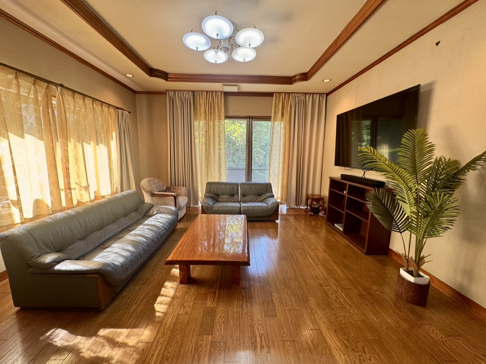
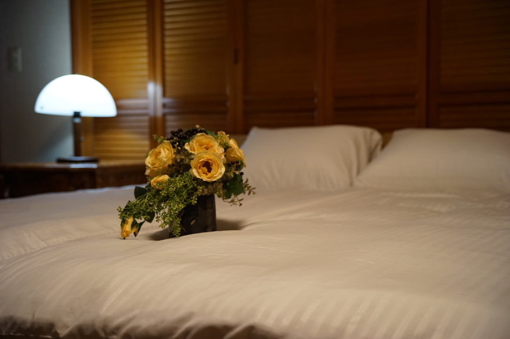
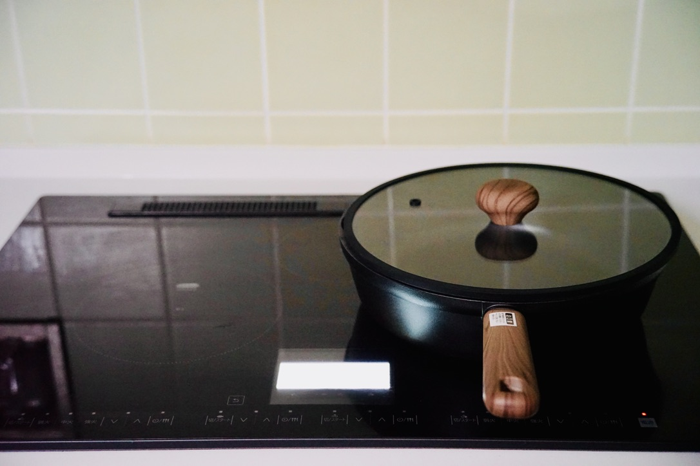
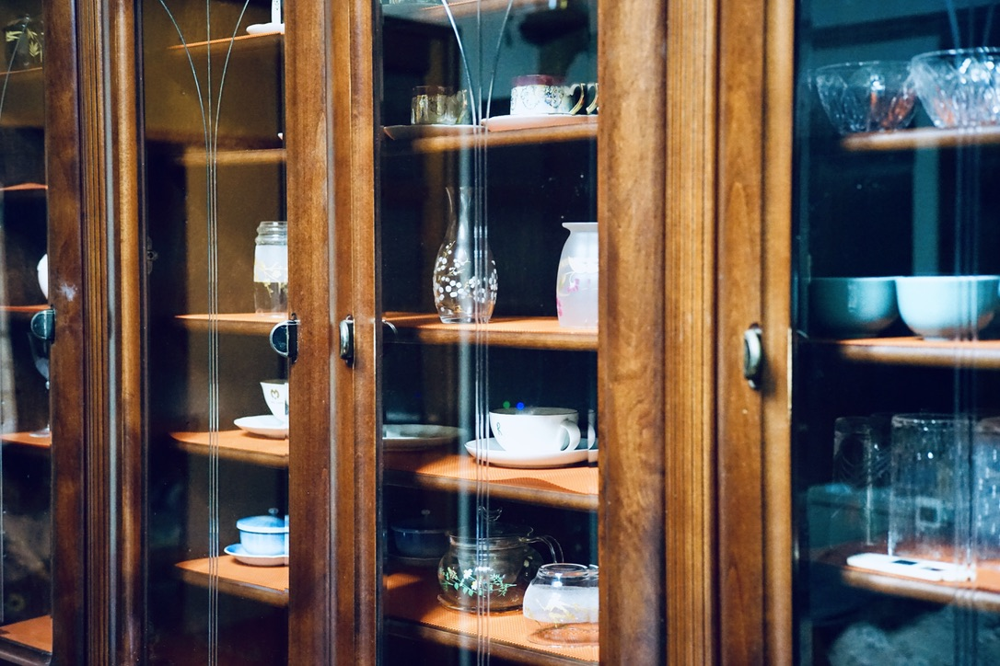
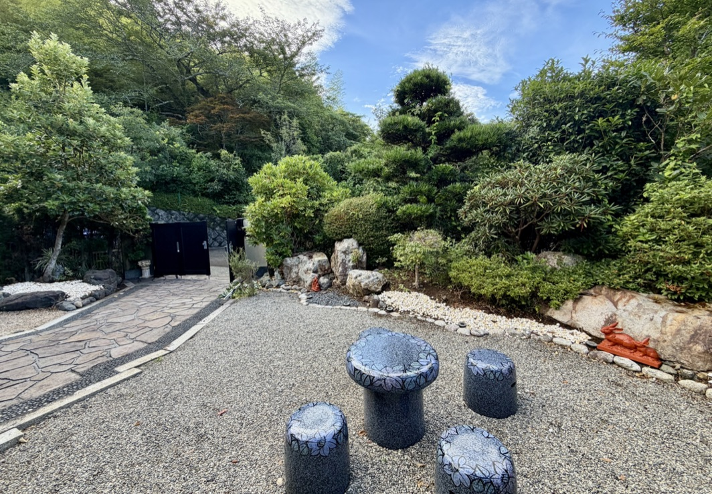
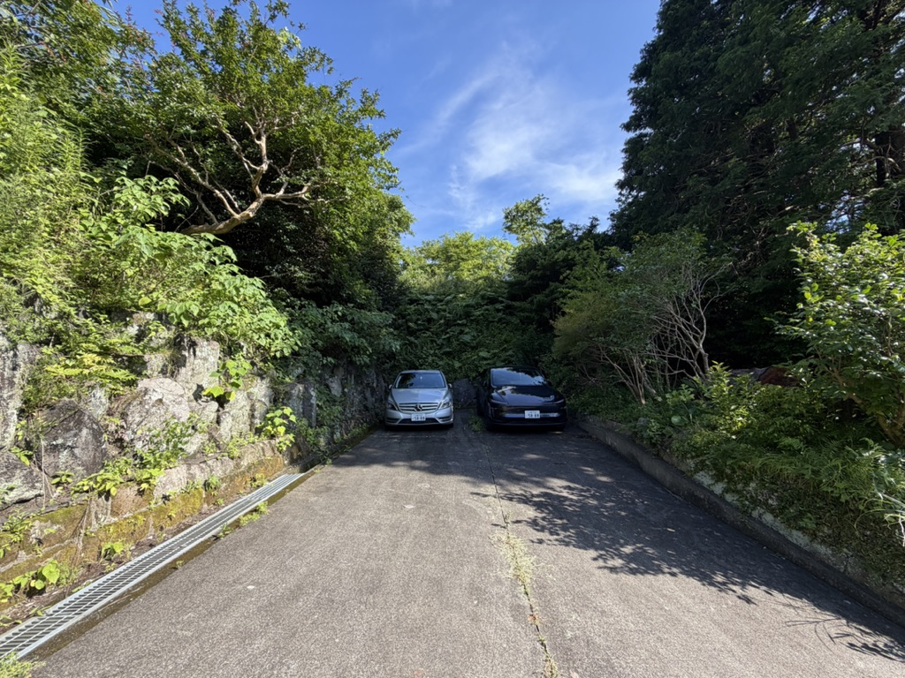
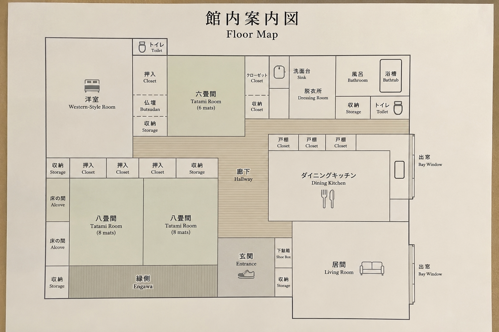

ゆめで過ごす時間








広い居間とダイニング、和室と寝室、充実したキッチン。夜の庭の灯りもお楽しみいただけます。
緑に抱かれた一日一組限定の一棟貸し。
大切な人と、静かな時間をお過ごしください。
「貸別荘 ゆめ」は、南伊豆の豊かな自然に囲まれた一棟貸しの宿です。約180㎡のゆとりある平屋に、和室3部屋と洋室1部屋をご用意しました。鳥のさえずりで目を覚まし、木漏れ日の中で語らい、夜には満天の星空を見上げる。ここには、「何もしない贅沢」があります。





広い居間とダイニング、和室と寝室、充実したキッチン。夜の庭の灯りもお楽しみいただけます。

無料駐車場は5台までご利用いただけます。
複数台でも安心してお越しいただける、敷地に近い駐車スペースです。

下田駅から車で約8分（約3.5km）／ 無料駐車場5台

弓ヶ浜、吉佐美大浜、田牛、多々戸浜など、美しい海岸が身近にあります。下田海中水族館や下田の町並みへも足を延ばしやすく、海遊びから観光、食事まで、その日の気分に合わせてお楽しみいただけます。詳しい周辺情報は、Booking.comの施設ページでもご案内しています。